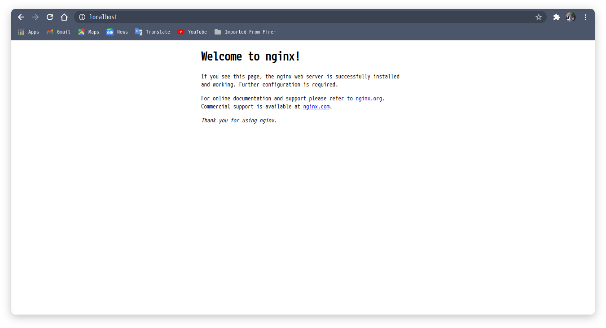
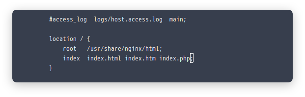
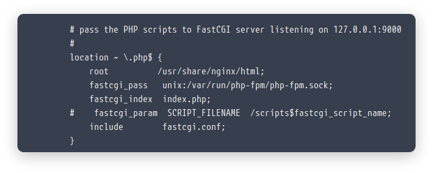
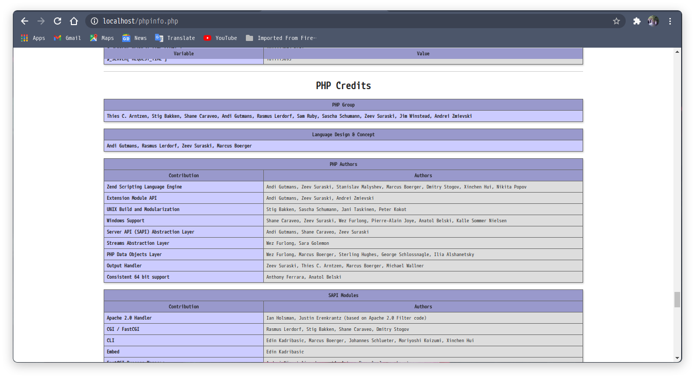

Jadi saya membuat tutorial ini setelah saya ahirnya berhasil menginstall archlinux setelah beberapa kali pecobaan gagal ☺. Daripada nanti kalau saya mau install dan lupa harus browsing" dulu. Baik kalau gitu mari kita beraksi.
Pertama update Sistem
sudo pacman -Syu
Install Nginx
sudo pacman -S nginx
Aktifkan nginx agar bisa start up saat booting.
sudo systemctl start nginx
sudo systemctl enable nginx
Jika proses di atas sudah selesai tanpa kendala apapun maka seharusnya jika kita membuka localhost maka sudah terbuka seperti ini:

Install PHP
Install php dengan melakukan Perintah
sudo pacman -S php php-fpm
Setelah menginstall php selesai kini tinggal mengatur web server kita agar dapat memanggil php-fpm. Untuk mengedit confignya bisa jalankan perintah berikut:
sudo nano /etc/nginx/nginx.conf
Dan tambahkan index.php pada location
location / {
root /usr/share/nginx/html;
index index.html index.htm index.php
}
jadi seperti berikut :

Dan temukan tulisan berikut :
#location ~ \.php$ {
# root html;
# fastcgi_pass 127.0.0.1:9000;
# fastcgi_index index.php;
# fastcgi_param SCRIPT_FILENAME /scripts$fastcgi_script_name;
# include fastcgi_params;
#}
konfigurasikan dengan menghapus tanda pagar atau commentnya dan bisa di ganti atau di tambah seperti berikut :

setelah selesai bisa save dengan ctrl + x kemudia y terus enter untuk yg mengeditnya menggunakan nano. Kemudian restart nginx nya dan jalankan service php-fpm
sudo systemctl start php-fpm
sudo systemctl enable php-fpm
sudo systemctl restart nginx
Testing PHP
Untuk tes web server kita sudah berjalan atau belum bisa cek dengan buat file di /usr/share/nginx/html/infophp.php
agar bisa buat file di file manager dan juga copy paste maka harus melalukan permision di folder html dengan cara
sudo chmod 777 -R /usr/share/nginx/html/
buat file dengan nama infophp.php dan berikut isinya:
<?php
phpinfo();
?>
kemudian jalankan dengan memanggil alamat localhost/infophp.php jika tampil seperti ini berarti kita sudah Berhasil

Untuk install Mysql
untuk install mysql saya sudah pernah membuat tulisanya Di sini